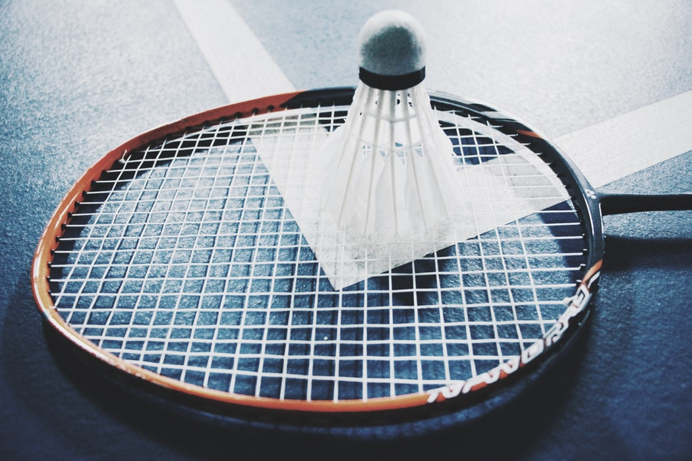

BadmintonWorld.TV is the official live channel of the Badminton World Federation (BWF), where we bring to you live, catch-up and delayed streaming of the big events on the HSBC BWF World Tour, as well as the majors like the Thomas & Uber Cups and the BWF World Championships.
Katowice, Poland.
The BWF World Senior Championships are held every two years. This is an individual championships with men’s and women’s singles and doubles, and mixed doubles events.
The age categories are divided as follows: +35, +40, +45, +50, +55, +60 +65, +70 and +75.
| Duo name | win/lose |
| SHIN/KOO | 2win/0lose |